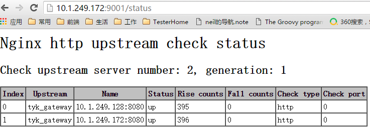

nginx 安装和使用
1. 需求
需求目的
1. 反向代理
2. 会话保持
3. 负载均衡
参考链接
http://nginx.org/en/docs/
http://nolinux.blog.51cto.com/4824967/1594029
2. 默认安装 nginx
2.1 离线安装依赖 pcre-8.39
文档
http://www.pcre.org/
安装
wget ftp://ftp.csx.cam.ac.uk/pub/software/programming/pcre/pcre-8.39.tar.gz
tar xzf pcre-8.39.tar.gz
cd pcre
./configure
make
make install
检查版本
pcre-config --version
2.2 nginx 1.10.3 离线安装
文档
http://nginx.org/en/docs/
安装
yum group list
yum groupinstall "Development tools" -y
sudo yum install zlib-devel
wget https://nginx.org/download/nginx-1.10.3.tar.gz
tar xzf nginx-1.10.3.tar.gz
cd nginx
./configure --prefix=/opt/app/nginx
make
make install
检查版本
/usr/local/nginx/sbin/nginx -V
3. 反向代理
3.1 ngx_http_proxy_module 和 ngx_http_upstream_module模块 (自带)
文档
http://nginx.org/en/docs/http/ngx_http_upstream_module.html
http://nginx.org/en/docs/http/ngx_http_proxy_module.html
配置
http {
include mime.types;
default_type application/octet-stream;
sendfile on;
keepalive_timeout 65;
upstream some_TEST {
sticky name=route expires=2h ;
server 10.0.0.1:80;
server 10.0.0.2:80;
keepalive 2000;
}
server {
listen 80;
server_name localhost;
location / {
proxy_pass http://some_TEST/;
proxy_redirect default;
proxy_set_header X-Real-IP $remote_addr;
proxy_set_header X-Forwarded-For $proxy_add_x_forwarded_for;
proxy_http_version 1.1;
proxy_set_header Connection "";
}
}
}
3.2 健康检查模块 nginx_upstream_check_module (第三方)(没有安装)
文档
https://github.com/yaoweibin/nginx_upstream_check_module

安装
wget http://nginx.org/download/nginx-1.10.3.tar.gz
tar xzf nginx-1.10.3.tar.gz
cd nginx
# 安装补丁
wget https://github.com/yaoweibin/nginx_upstream_check_module/archive/master.zip
unzip nginx_upstream_check_module-master.zip
patch -p0 < /opt/soft/nginx_upstream_check_module-master/check_1.9.2+.patch
./configure --add-module=/opt/soft/nginx_upstream_check_module-master
make
make install
配置文档
https://github.com/yaoweibin/nginx_upstream_check_module
配置范例
http {
upstream tyk_gateway {
server 10.1.249.172:8080;
server 10.1.249.128:8080;
check interval=5000 rise=3 fall=3 timeout=4000 type=http;
check_http_expect_alive http_2xx http_3xx http_4xx;
}
server {
listen 9001;
location / {
proxy_pass http://tyk_gateway;
}
location /status {
check_status;
access_log off;
allow 0.0.0.0;
allow all;
}
}
}
4. 负载均衡
4.1 ip_hash 负载均衡 (自带)
配置文档
http://nginx.org/en/docs/http/load_balancing.html#nginx_load_balancing_with_ip_hash
配置范例
# upstream节点中添加“ip_hash”即可
http {
upstream tyk_gateway {
ip_hash;
server 10.1.249.172:8080;
server 10.1.249.128:8080;
}
}
4.2 Sticky 负载均衡 (第三方)(默认安装)
配置文档
https://bitbucket.org/nginx-goodies/nginx-sticky-module-ng
安装
wget https://bitbucket.org/nginx-goodies/nginx-sticky-module-ng/get/master.tar.gz
tar xvzf master.tar.gz
cd /opt/soft/nginx
./configure --prefix=/opt/app/nginx --add-module=/opt/soft/nginx-sticky-module-ng
mv /opt/app/nginx/sbin/nginx /opt/app/nginx/sbin/nginx.old
make
make install
sudo kill -9 $(ps -ef | grep nginx | grep -v grep | awk '{print $2}')
cd /opt/app/nginx/sbin
sudo ./nginx
配置范例
http {
upstream some_TEST {
sticky name=route expires=2h ;
server 10.253.9.60:80;
server 10.253.9.116:80;
keepalive 2000;
}
}
5. 常用命令
5.1 常用nginx命令
sudo /usr/local/nginx/sbin/nginx -c /etc/nginx/nginx.conf
# 停止Nginx
nginx -s stop
# 平稳关闭Nginx，保存相关信息，有安排的结束web服务
nginx -s quit
# 因改变了Nginx相关配置，需要重新加载配置而重载
nginx -s reload
# 重新打开日志文件
nginx -s reopen
# 常用linux命令
find / -name libcrypto
locate libcrypto.so
sudo lsof -i:（端口号）
kill -9 <PID>
netstat -ant | grep $ip:8080 |wc -l
top
ps aux | grep nginx
5.2 报错处理
- 找不到 libcrypto.so
# 做软链接
ln -s /usr/local/lib/libcrypto.so.1.1 /lib64